체류관리
체류자격 유지와 외국인등록은 합법적인 유학생활의 기본입니다. 기한 내 신청을 놓치지 마세요.
외국인 유학생은 입국 후 90일 이내에 관할 출입국·외국인청(사무소)에서 외국인등록을 마쳐야 하며, 체류기간 만료 전 연장 신청을 통해 체류자격을 유지해야 합니다. 국제교류원에서는 신청 서류 작성과 방문 예약을 지원합니다.
| 항목 | 수수료 |
|---|---|
| 외국인등록 | 30,000원 |
| 체류기간 연장 | 60,000원 |
| 체류자격 변경 | 130,000원 |
- D-2 전문학사·학사 등 정규 학위과정 유학
- D-4 어학연수(부설 한국어교육과정) 과정
- D-10 졸업 후 구직활동 자격
체류지(거주지)를 변경한 경우 전입일로부터 14일 이내에 신고해야 합니다. 외국인등록증 분실·연장 등 대부분의 민원은 HiKorea(www.hikorea.go.kr)에서 사전 방문예약 후 처리하세요.
유학생보험
예기치 못한 질병·사고에 대비해 모든 유학생은 보험에 의무 가입해야 합니다.
2021년 3월부터 국내 체류 외국인 유학생은 국민건강보험에 당연 가입되며, 입국 후 6개월이 경과하면 자동으로 지역가입자로 편입됩니다. 입국 초기 공백 기간에는 학교가 안내하는 유학생 단체보험에 별도로 가입하여 의료 사각지대를 최소화하시기 바랍니다.
보험금 청구 시에는 병원 진료 확인서(진단서)와 약제비 영수증 원본을 반드시 보관·제출해야 합니다. 서류가 누락되면 보험금 지급이 지연될 수 있으니 진료 후 즉시 챙겨 두세요.
기숙사
캠퍼스 안에서 안전하고 편리한 주거 생활을 누릴 수 있습니다.


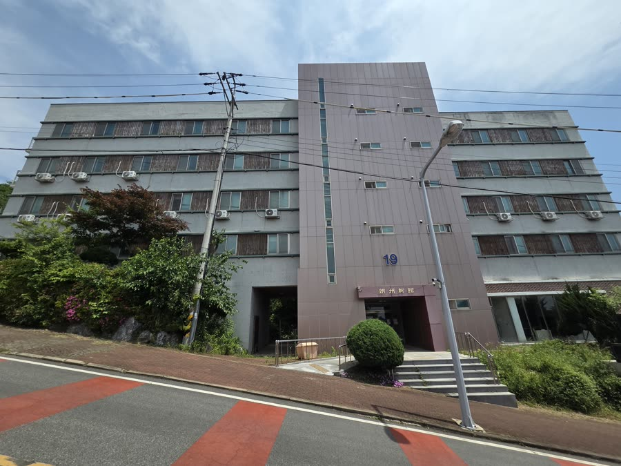
기숙사비
100만원 · 1학기(15주)
호실 타입
2인 1실
여자 기숙사
낭주관(5번동) · 76명
남자 기숙사
낭주신관(19번동) · 40명
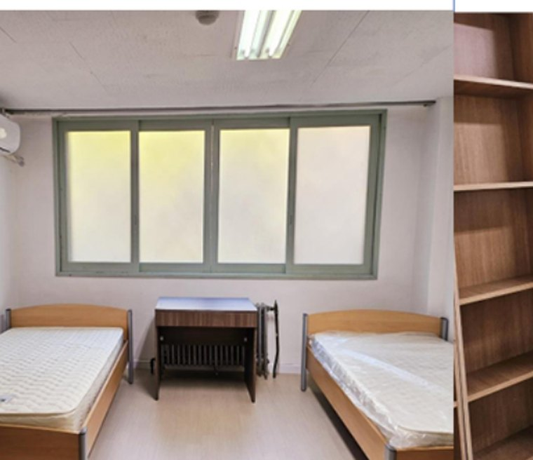
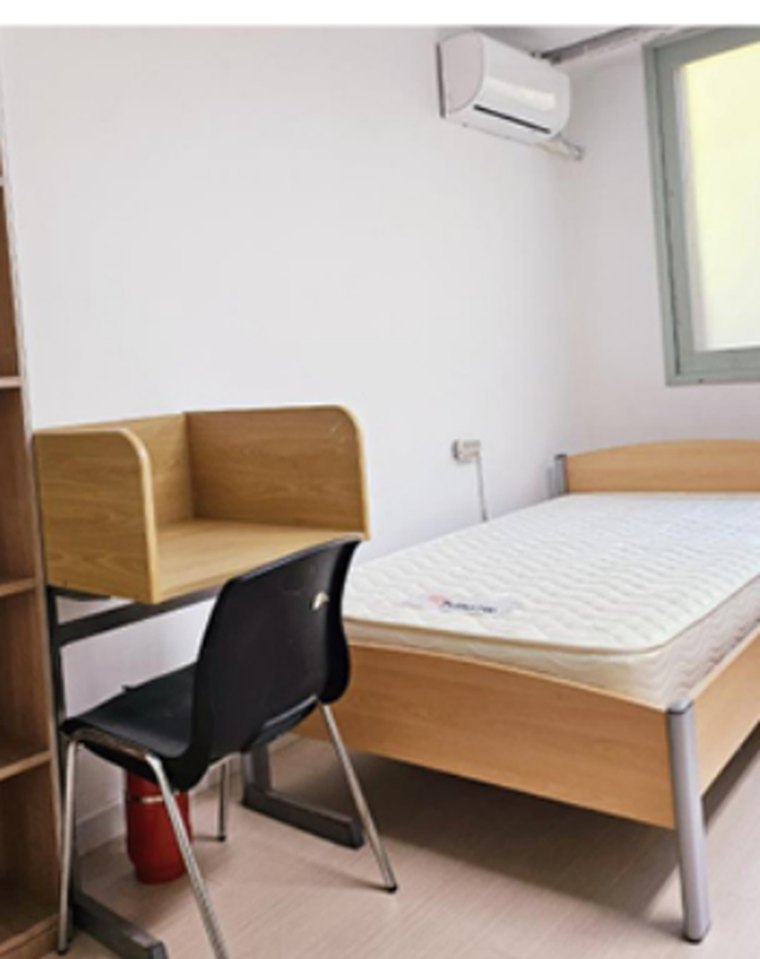
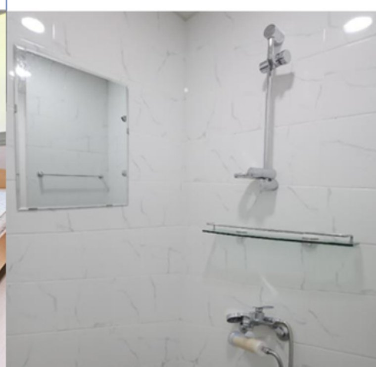
고지서·가상계좌 확인
학사관리시스템에서 확인
기숙사비 납부
학생별 가상계좌로 납부
입실 신청 완료
납부 시 자동 완료
입실
개강일 전날 입사
기숙사비 · 식사
100만원 / 1학기(15주) · 식사 제공: 월~금 석식 / 토·일·휴일 중식·석식
식당 이용시간
점심 12:00~12:30 (주말·공휴일) · 저녁 17:50~18:20 (계절에 따라 변동)
개관·귀관
개강 전날 09:00~18:00 입사 · 낭주관 좌·우 현관 07:00~22:00 / 낭주관 중앙·낭주신관 24시간
기숙사비 납부
학사관리시스템(portal.duh.ac.kr) 기숙사 메뉴 가상계좌 · 통상 입실 전주 일요일까지
입실 준비물
건강진단서 1부 — 결핵(X-Ray)·B형간염(혈액), 병원·보건소 발급 (미제출 시 입실 불가)
택배 수령
본인 직접 수령 · (58439) 전남 영암군 학산면 영산로 76-57 낭주관/낭주신관 기숙사
공동시설·호실 비품
화장실·세면실·세탁실·샤워실 / 침대·책상·책장·옷장
기숙사 장학금
사생장·사생은 당해학기 기숙사비 납부 후 장학금으로 지급
기숙사 문의 061-470-1672. 기간 내 미납 시 방 배정이 제한될 수 있으며, 수요가 수용 인원을 초과하면 거리·선착순·성적 등으로 배정됩니다. 무단 퇴실 시 다음 학기 입실이 제한됩니다.
기숙사 벌점 기준표 (펼쳐보기)
| 구분 | 벌점 항목 | 벌점 |
|---|---|---|
| 기숙사 출입 | 사감의 사전 승인 없이 임의로 사실(방)을 바꾸는 자 | 20점 |
| 남(여)학사 사생이 여(남)학사에 무단 출입(식사시간 외) | 15점 | |
| 출입통제시스템을 비정상적인 방법으로 통과한 자 | 10점 | |
| 타인에게 사생증 대여 및 숙식 제공 행위 | 10점 | |
| 외부인 출입 또는 외부인 출입 방관 | 10점 | |
| 사내 이용 시 출입구를 이용하지 않는 행위 | 5점 | |
| 0시~5시 출입 기록이 있는 경우 | 5점 | |
| 기숙사 질서 | 절도행위, 파렴치행위 등 단체생활 부적응자 | 20점 |
| 성폭력·성희롱·성추행 행위자(기소) | 20점 | |
| 성폭력·성희롱·성추행 의심자(고발) *무혐의 시 퇴실 취소 | 20점(임시퇴실) | |
| 향정신성 의약품·환각제 사용자, 법정 전염성 질환자 | 20점 | |
| 학교로부터 무기정학 이상의 징계를 받은 경우 | 20점 | |
| 학교로부터 유기정학 이상의 징계(31일 이상) | 20점 | |
| 사내 취사 행위(화기 제품 사용) | 20점 | |
| 무단외박 후 사고 시 | 20점 | |
| 사감·사생장에게 심히 불손한 행동, 업무 지시 불이행 | 15점 | |
| 사내에서의 음주·도박·폭력 행위 | 15점 | |
| 기숙사 실내 흡연 | 10점 | |
| 화재대피훈련(소방교육) 미이수 | 10점 | |
| 학교로부터 유기정학 이상의 징계(30일 이하) | 10점 | |
| 만취 상태에서 타인의 도움을 받아 출입한 자 | 10점 | |
| 사내 취사 행위(전기제품 사용) | 10점 | |
| 학사 내·외에서 토사물 행위자 | 5점 | |
| 풍기문란 행위로 학사의 품위를 손상시킨 경우 | 5점 | |
| 타인 명의 우편물 수취 또는 개봉 행위 | 5점 | |
| 낭주관 기숙사 건물 주차 | 5점 | |
| 소란·소음 등으로 타인에게 피해를 주는 행위 | 5점 | |
| 기숙사 환경 | 호실 안에서 반려동물을 키우는 행위(개·고양이·햄스터) | 20점 |
| 낙서, 부착물·광고물 등의 무단 부착 및 배포 | 15점 | |
| 공용공간·시설(샤워실·세탁실·독서실 등) 이용 시 타인에게 피해 | 10점 | |
| 에어컨·전열기구 사용 후 전원 미차단 | 5점 | |
| 쓰레기 유기·환경오염 등 단체생활에 불쾌감을 주는 행위 | 5점 | |
| 시설물의 무단 이동 및 변형 | 3점 | |
| 기숙사 시설 | 사내 기물·시설물을 고의로 파괴(변상조치) | 20점 |
| 사내 기물·시설물의 손상(변상조치) | 10점 | |
| 창틀 밖 물품 비치 또는 낙하 행위 | 5점 | |
| 사생 부주의로 사생실 변기·하수구가 막힌 경우 | 5점 | |
| 금지물품 반입 | 위험물질(부탄가스·인화물질·흉기 등) 반입 및 사용 | 5점 |
| 외부 전열기구 반입(전기버너 등) | 10점 |
기타 사감 주제회의를 거쳐 1~20점의 벌점을 부여할 수 있으며, 10점 이상 부여 시 사감 주제회의에서 결정합니다. 기숙사 무단 퇴실 시 다음 학기 입실이 불가합니다.
교내편의시설
학습과 휴식, 일상생활을 캠퍼스 안에서 한 번에 해결하세요.
 도서관왕인관(4번) 2층 · 09:00~17:30 · 교재 판매처
도서관왕인관(4번) 2층 · 09:00~17:30 · 교재 판매처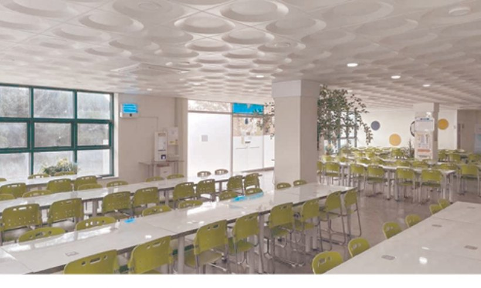
학생식당봉석관(6번) 1층 · 09:00~15:00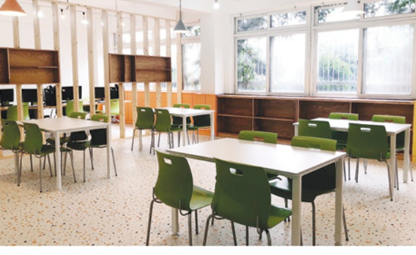
휴게실본관(1번) 112호 · 09:00~18:00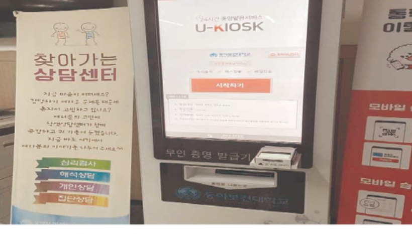
무인증명발급시스템본관(1번) 로비 · 09:00~18:00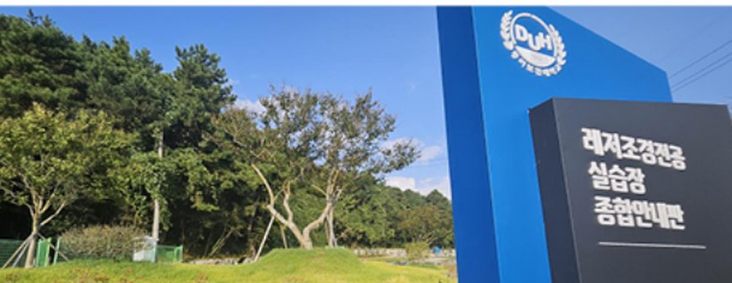
레저조경전공 실습장정무관(10번) 옆 · 09:00~18:00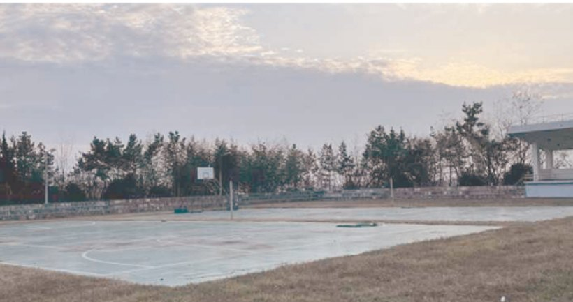
운동장월출관(13번)·정무관(10번) 앞 · 09:00~18:00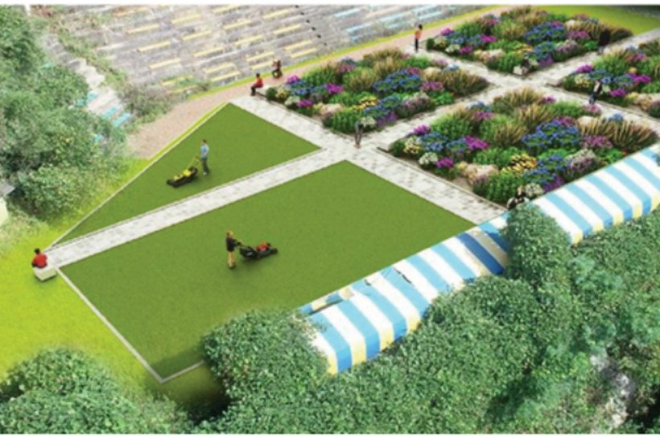
레저조경 캡스톤 실습장왕인관(4번) 앞 · 09:00~18:00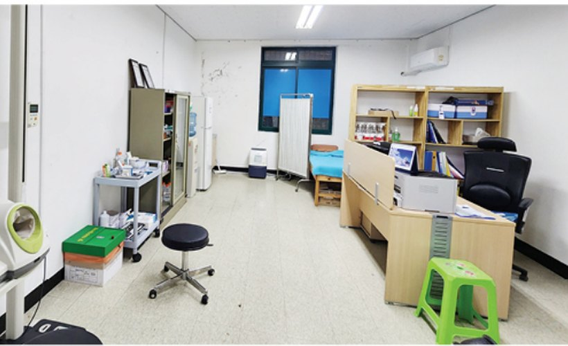
보건실왕인관(4번) 111호 · 09:00~18:00 편의점정무관(10번) 1층 · 06:30~23:00
편의점정무관(10번) 1층 · 06:30~23:00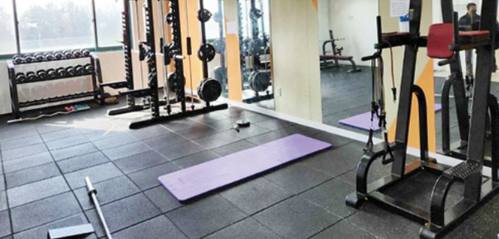
체력단련실정무관(10번) 1층 · 09:00~22:00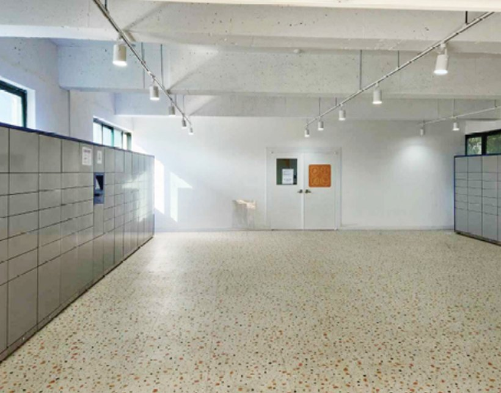
무인택배보관함정무관(10번) 1층 · 09:00~22:00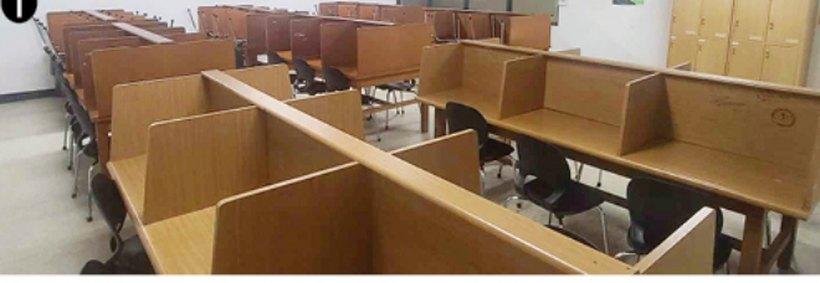
열람실소열람실 왕인관 2층 · 기숙사 pet하우스 2층 · 09:00~17:30 VR실습장요한관(18번) · 09:00~18:00
VR실습장요한관(18번) · 09:00~18:00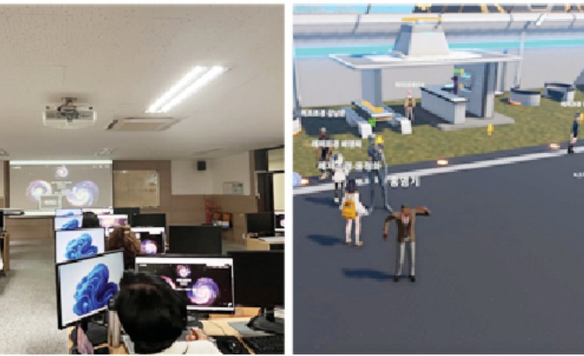
메타버스 실습장본관(1번) 401호 · 09:00~18:00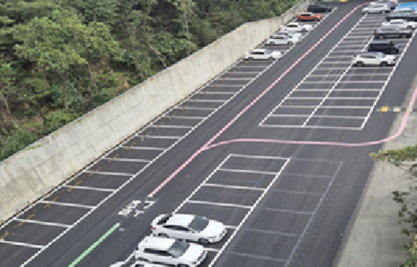
주차장본관 뒤편 · 24시간시설 운영시간은 학사일정·방학에 따라 변동될 수 있습니다. 자세한 사항은 국제교류원(대표전화 061-470-1700)으로 문의하세요.
교외편의시설
캠퍼스 인근 학산면 일대에 교육·교통·문화·의료·행정 등 생활 인프라가 갖춰져 있어 안심하고 생활할 수 있습니다.

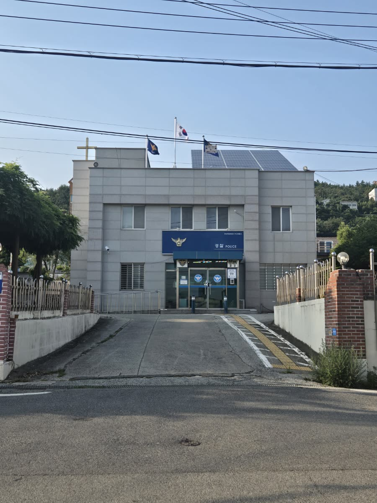
하나로마트
생활용품·식료품 · 인근 생활 장보기
아시아 식품점
다국적 식자재 · 유학생 자국 요리 재료
영암군 학산도서관
지역 공공도서관 · 열람·자료 이용
독천버스터미널
시외·군내버스 · 영암·목포 방면 이동
보건소·보건지소
기초 진료·예방접종 등 공공 의료
학산면사무소
전입신고 등 행정 민원
독천초등학교·병설유치원
인근 교육기관 (동반 가족 자녀)
낭주중학교·낭주고등학교
인근 중·고등학교
교외 시설의 위치·운영시간은 각 기관 안내를 확인하세요. 인근 시설 사진은 순차적으로 업데이트됩니다.